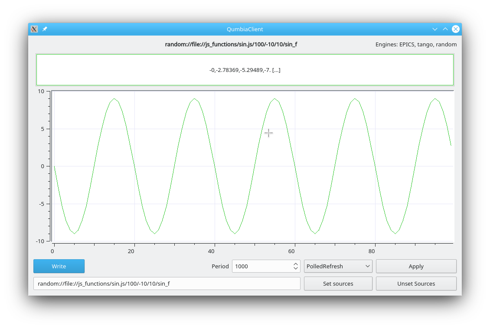

Introduction
The CumbiaRandom module generates data randomly or from a specified JavaScript file. Data can be used to test higher level applications in terms of usability, performance and behaviour in case of errors.
The module can be used and introduced into your application as any other engine. It can be registered with CumbiaPool/CuControlsFactoryPool as in usual multi engine projects, and the concept of source is equivalent. The module is "*read only*" (only sources, no targets), and any cumbia-qtcontrols widget can be associated with a cumbia-random source.
The difference is that there is no connection to any control system.
Features
The sources supplied to the module determine how data is generated in terms of size, bounds and update period. Moreover, names can be used to determine thread grouping in case of multiple readers.
Examples
In the examples below, we use the cumbia read command line client.
Read a randomly generated scalar value
The output will be:
* one_r: [14:02:45+0.648788] [double] 59.72
The source in the example is made up of several sections separated by a '/':
- random:// associates what follows to the cumbia-random module (through the CumbiaPool and CuControlsFactoryPool)
- one/random/number an arbitrary name that is given to the random source. Everything that precedes the '/'-separated numeric section is interpreted as the source name.
- first number: the size of the generated result
- second number: the minimum value that can be generated
- third number: the maximum value
- one_r a label that can be associated to the source name (optional). If present, it is displayed in the output at the beginning of the line
Read a randomly generated vector of 3 values between -100 and 100
The output will be:
* array_3: [14:37:26+0.249328] [double,3] { 61.62,-35.80,-35.02 }
Monitor a randomly generated vector of 3 values between -10 and +10 with a period of one second
The output will be:
* monitor started: press any key to exit
monitor_a_3: [14:39:16+0.627573] [double,3] { 8.11,3.82,-4.99 }
monitor_a_3: [14:39:16+0.627634] [double,3] { 0.53,6.21,-8.98 }
monitor_a_3: [14:39:17+0.627987] [double,3] { 1.39,-5.77,-6.22 }
monitor_a_3: [14:39:18+0.628198] [double,3] { -6.17,-8.67,-9.01 }
monitor_a_3: [14:39:19+0.628415] [double,3] { 1.48,7.36,9.45 }
[...]
A monitor is stopped whenever a key is pressed. Avoid CTRL-C for proper termination.
Monitor three randomly generated vectors of 3 values each, with a period of one second
cumbia monitor random:
random:
The output will be:
monitor started: press any key to exit
a_3: [14:42:49+0.430095] [double,3] { 7.75,-1.79,4.73 }
a_3: [14:42:49+0.430147] [double,3] { -2.53,-2.72,1.63 }
b_3: [14:42:49+0.431249] [double,3] { 8.37,10.42,-9.41 }
b_3: [14:42:49+0.431287] [double,3] { 9.46,4.48,5.46 }
c_3: [14:42:49+0.431744] [double,3] { -16.46,-64.88,-15.70 }
c_3: [14:42:49+0.431785] [double,3] { 68.69,1.35,20.00 }
a_3: [14:42:50+0.430501] [double,3] { -5.11,4.62,-2.32 }
b_3: [14:42:50+0.43159] [double,3] { 11.27,6.16,0.61 }
c_3: [14:42:50+0.432018] [double,3] { -52.93,19.59,64.50 }
a_3: [14:42:51+0.430715] [double,3] { -1.04,1.17,2.77 }
b_3: [14:42:51+0.431767] [double,3] { 2.43,8.20,6.89 }
c_3: [14:42:51+0.432161] [double,3] { -59.39,-99.55,67.54 }
Now take the last example and fetch some extra information, by adding –l=medium to the command line. The output will be more detailed:
[...]
a_3: -10.00 < [14:45:32+0.47847] [double,3] { -5.78,-0.14,-5.87 } [random:
b_3: -12.00 < [14:45:32+0.478849] [double,3] { -8.28,-1.76,-8.73 } [random:
c_3: -100.00 < [14:45:32+0.479327] [double,3] { 89.96,-66.21,-37.81 } [random:
[...]
The output encloses the read value between upper and lower bounds, shows the full source name and the execution time.
Thread grouping
The cumbia-random module takes the first section of the source string delimited by '/' to determine how to group number generator threads together. Add the –l=high option to get even more detailed information while reading:
cumbia read random:
--l=high
Output:
r1: [th1] -10.00 < [14:50:56+0.0891559] [double] 10.10 [random:
r2: [th2] 0.00 < [14:50:56+0.0895171] [double,2] { 5.05,7.84 } [random:
r3: [th1] -10.00 < [14:50:56+0.0900221] [double,3] { 6.04,-4.54,8.10 } [random:
After the labels, r1, r2, r3, thread information is shown between square brackets. As you can see, the th1 and th2 sections in the source names have been used to execute the three readings in two threads grouped by name.
JavaScript generated data
A cumbia-random source can specify a JavaScript file (name ending in *.js) as data provider. The pattern for the source must be:
file.js will be passed the four arguments given in the source name (period is optional, default is 1 second) plus two additional parameters: the number of calls made to the function up to that moment and the value from the last call.
For example:
will produce the following output
monitor started: press any key to exit
sin_f: [15:03:20+0.105853] [double,100] { -0.00,-2.19,-4.17,-5.73,-6.74,-7.09,-6.74,-5.73,-4.17,-2.19,-0.00,2.19,4.17,5.73,6.74,7.09,6.74,5.73,4.17,2.19,0.00,-2.19,-4.17,-5.73,-6.774,-5.73,-4.17,-2.19,-0.00,2.19,4.17,5.73,6.74,7.09,6.74,5.73,4.17,2.19,0.00,-2.19,-4.17,-5.73,-6.74,-7.09,-6.74,-5.73,-4.17,-2.19,-0.00,2.19,4.17,5.73,6.74,7.09,6.74,5.73,4.17,2.19,04.17,-5.73,-6.74,-7.09,-6.74,-5.73,-4.17,-2.19,-0.00,2.19,4.17,5.73,6.74,7.09,6.74,5.73,4.17,2.19,0.00,-2.19,-4.17,-5.73,-6.74,-7.09,-6.74,-5.73,-4.17,-2.19,-0.00,2.19,4.17,5.73,6.74,.73,4.17,2.19 }
sin_f: [15:03:20+0.105985] [double,100] { -0.00,-1.89,-3.59,-4.94,-5.81,-6.11,-5.81,-4.94,-3.59,-1.89,-0.00,1.89,3.59,4.94,5.81,6.11,5.81,4.94,3.59,1.89,0.00,-1.89,-3.59,-4.94,-5.881,-4.94,-3.59,-1.89,-0.00,1.89,3.59,4.94,5.81,6.11,5.81,4.94,3.59,1.89,0.00,-1.89,-3.59,-4.94,-5.81,-6.11,-5.81,-4.94,-3.59,-1.89,-0.00,1.89,3.59,4.94,5.81,6.11,5.81,4.94,3.59,1.89,03.59,-4.94,-5.81,-6.11,-5.81,-4.94,-3.59,-1.89,-0.00,1.89,3.59,4.94,5.81,6.11,5.81,4.94,3.59,1.89,0.00,-1.89,-3.59,-4.94,-5.81,-6.11,-5.81,-4.94,-3.59,-1.89,-0.00,1.89,3.59,4.94,5.81,.94,3.59,1.89 }
To see a plot of the sin function, you would rather issue the following command:

cumbia client with a sin function generated by a JavaScript function in a js file
In the example, the working directory contains a file named sin.js under the js_functions folder. An absolute path can be specified as well
Further reading
The cumbia read command line client with bash auto completion functionality. The cumbia client Qt graphical client with bash auto completion functionality.
Including the module in a cumbia application
Just a few lines of code are necessary to integrate the cumbia-random module in your graphical application. Presently, you will be able to take advantage of the testing features provided by the module.
Using pkg-config file
A cumbia-random.pc pkg-config file is distributed under the INSTALL_ROOT/lib/pkgconfig directory. It can be used to include cumbia-random in your project.
Through the Qt pro file
For Qt applications, adding the following lines to the Qt project file (.pro) is enough:
exists($${INSTALL_ROOT}/include/cumbia-random/cumbia-random.pri) {
include($${INSTALL_ROOT}/include/cumbia-random/cumbia-random.pri)
}
Modify the main class <em>cpp</em> file
CumbiaPool and CuControlsFactoryPool objects are necessary when your application is required to support multiple engines. If the project is generated with the cumbia new project tool and the multiple engine support option is chosen, then you only need to add the following lines to the main class cpp file:
#ifdef CUMBIA_RANDOM_VERSION
#endif
#ifdef CUMBIA_RANDOM_VERSION
cu_pool->registerCumbiaImpl("random", cura);
cura->getServiceProvider()->registerService(CuServices::Log, new CuLog(&m_log_impl));
#endif
in complete analogy with any other multi engine project, that, for instance, requires support for Tango and EPICS.
- Notes
- cu_pool is a pointer to a CumbiaPool object
- m_ctrl_factory_pool is a private attribute of the main class, type CuControlsFactoryPool
- m_log_impl is a log implementation
- CuRNDReaderFactory is a factory that instantiates random readers
- the setSrcPatterns methods register sources starting with the random:// prefix with the cumbia-random module.
To comply with the given implementation, the main class will have these attributes
private:
CumbiaPool *cu_pool;
QuLogImpl m_log_impl;
CuLog *m_log;
CuControlsFactoryPool m_ctrl_factory_pool;
The cumbia read and the cumbia client apps are examples of multi-engine integration including cumbia-random.